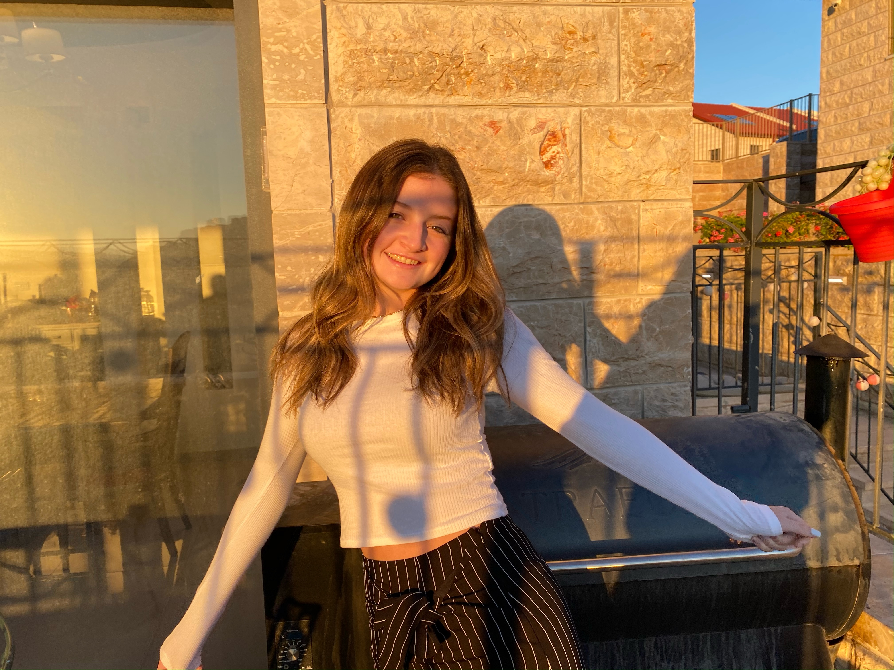

My name is Alexandra (Lexie) Alpert and I am a sophomore from Denver, Colorado studying at the University of Maryland. I am majoring in Journalism and obtaining a minor in Business Analytics. I have a passion for writing, public relations, and content creation for social media. On the resume, and clips page, you can find more information about me!
